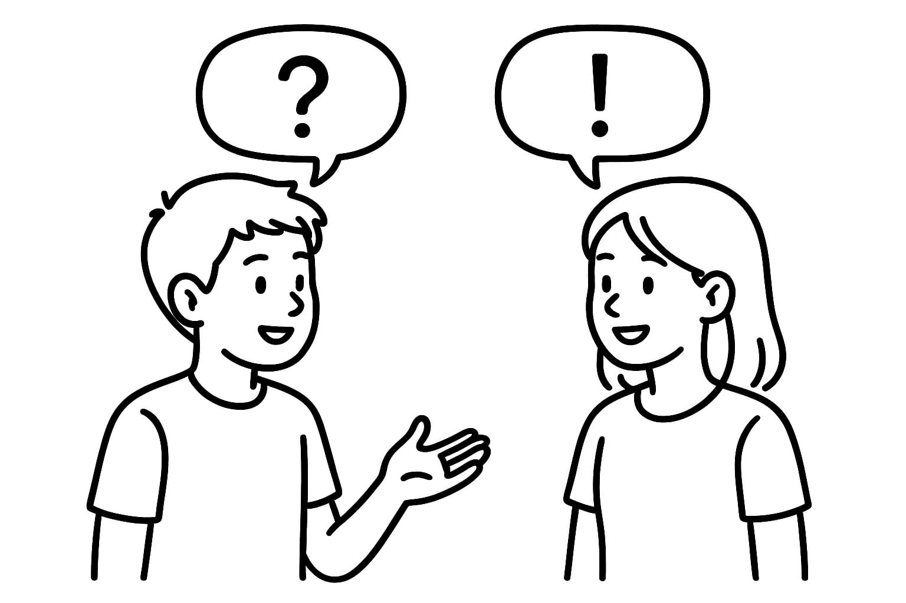
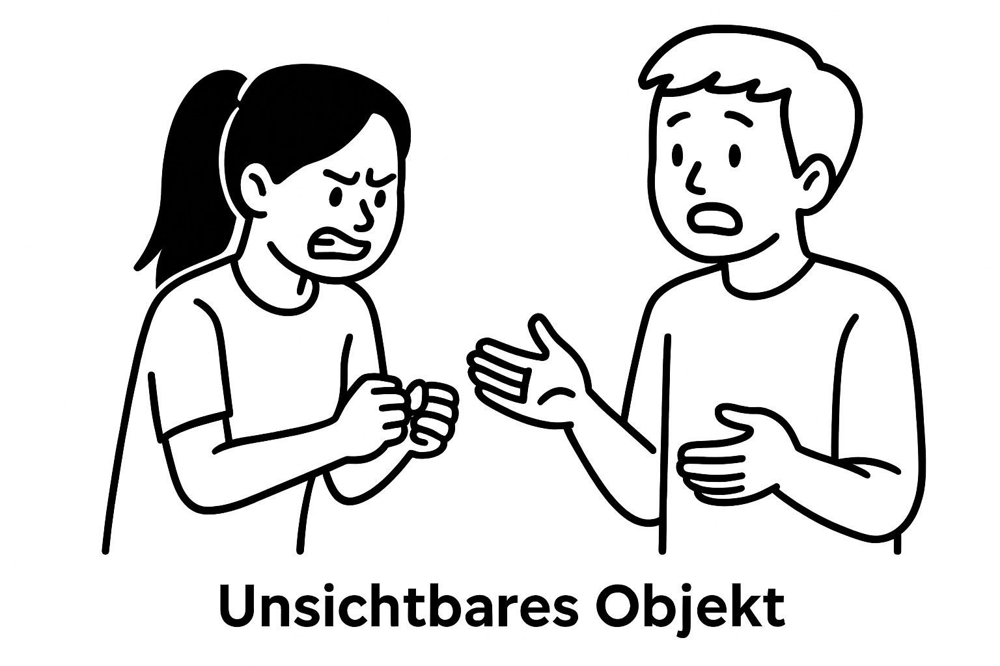

EIN WORT SATZ

Dieses Spiel ist relativ einfach und funktioniert wie Folgt:
1. Ihr müsst minimum zwei Personen sein
2. Nun müsst ihr zu einem gegebenen Thema wie z.B. "Strand" oder "Raketen" Sätze bilden.
3. Aber hier liegt der Haken, denn jeder von euch darf nur ein Wort sagen, um bei der Bildung des Satzes zu helfen,
bis er wieder dran ist.
4. Um nun noch etwas Schwierigkeit hinein zu bringen, könnt ihr euch auf ein gemeinsames Wort einigen, welches nicht gesagt werden darf (Tabuu-Wörter).
Wenn es nun doch von einer Person gesagt wird, ist diese draussen.
5. Ihr könnt jederzeit weitere "Tabuu-Wörter" hinzufügen.
6. Viel Spass beim spielen und schreibt uns auf Insta gerne was für lustige Sätze ihr kreiert habt!
ABC-SPIEL
Das jeweils erste Wort im Dialog beginnt mit dem nächsten Buchstaben im Alphabet.
Das Spiel geht bis der Buchstabe "Z" erreicht ist. Das ABC-Spiel ist daher auch unter dem
Namen Alphabetspiel bekannt.
Beispiel:
Erster Spieler: "Abends bekomme ich immer Hunger. Das ist nicht gut für meine Figur!"
Zweiter Spieler: "Besonders lecker finde ich Schnitzel."
Erster Spieler: "Currywurst esse ich lieber. Am Besten mit Pommes."
usw.
Für die Zuschauer ist es anschaulich, wenn der jeweils anstehende Buchstabe auf einem vom Moderator
gehaltenen DIN-A-4-Blatt zu lesen ist - dh.
je Buchstabe ein Blatt! Man kann z.B. mit Hilfe des Schreibprogramms Word einzelne Buchstabe so groß formatieren,
dass Sie ausgedruckt genau auf eine Seite passen.
Quelle: Improwiki

DAS UNSICHTBARE OBJEKT
Beim Improvisationsspiel „Unsichtbares Objekt" stellt eine Person ein Objekt dar,
das nicht wirklich vorhanden ist, und benutzt es ausschließlich durch Bewegung und Körpersprache.
Größe, Gewicht, Form und Beschaffenheit sollen dabei möglichst genau gespielt werden,
damit die Mitspielenden erkennen können, um was für eine Art von Objekt es sich handelt.
Eine zweite Person übernimmt dieses unsichtbare Objekt und führt die Handlung fort,
und entwickelt diese weiter, kann es aber auch bewusst verändern oder neu interpretieren.
Das Spiel endet wenn jede Person einmal an der Reihe war.
Es geht also um gemeinsames Erfinden und weiterführen.
Quelle: Improwiki
